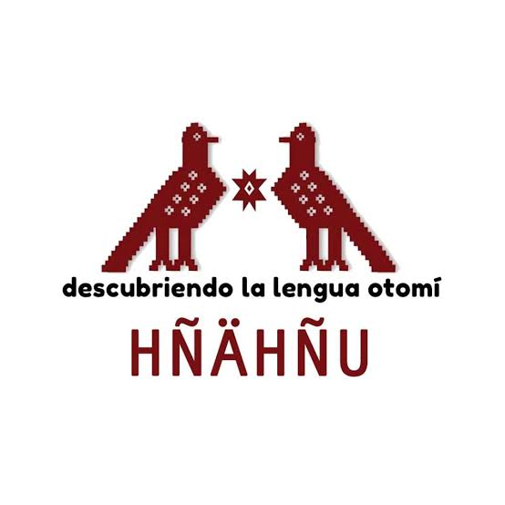
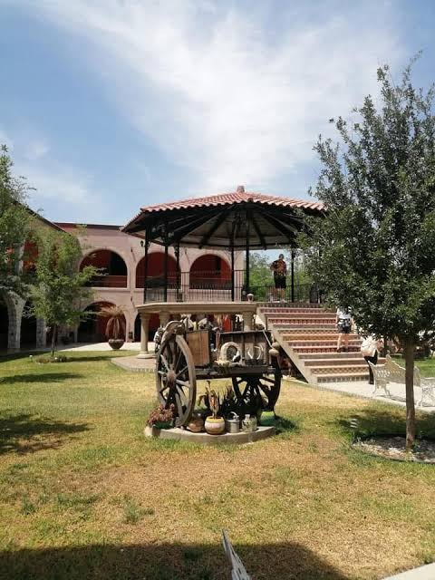
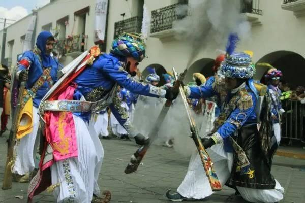
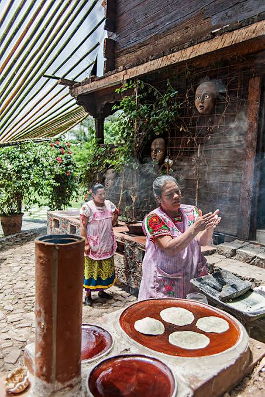

Bienvenidos
Bienvenido a nuestro sitio web oficial. Dado que el otomí cuenta con nueve variantes lingüísticas registradas por el Instituto Nacional de Lenguas Indígenas (INALI)

Lugares para visitar
Se encuentra a un costado de la escuela Primaria José María Morelos y Pavón y se usó anteriormente para que la gente se bañara y lavara ropa en el ojo de agua.

Tradiciones
Conoce las tradiciones que forman parte de nuestra historia local. Estas costumbres suelen fusionar la herencia católica española con las raíces indígenas locales.

Comida tradicional
Deliciosos platillos y postres preparados con recetas tradicionales. combina la base del maíz, el autoconsumo del campo y preparaciones de cocción lenta heredadas de la época colonial y rural
